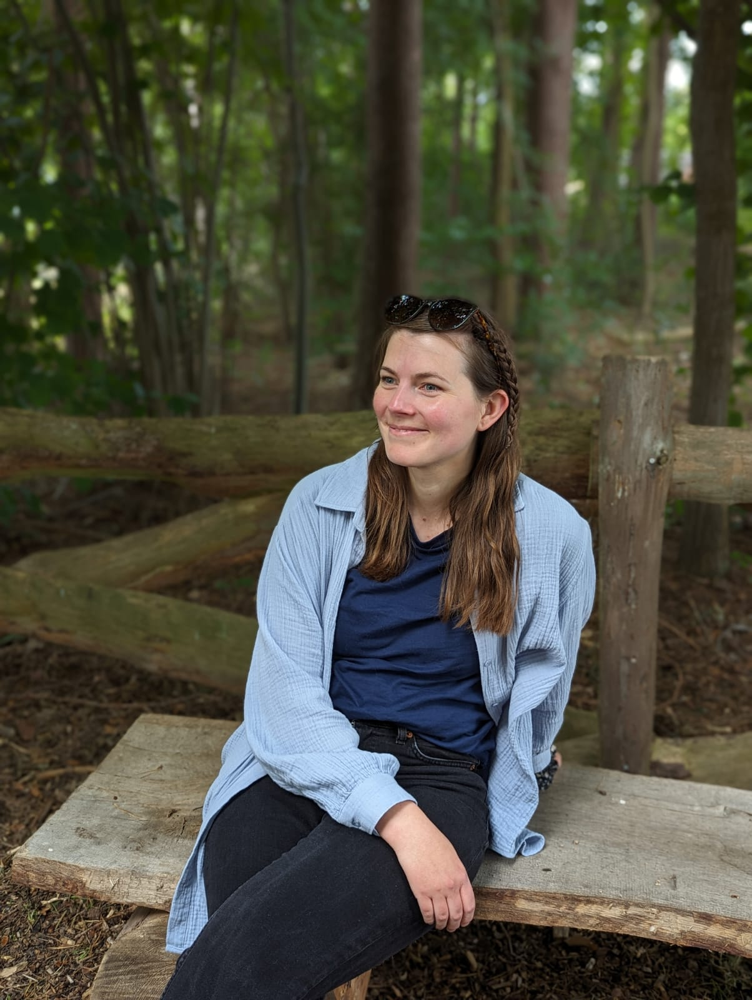

Über mich
Mein Name ist Pia Mecklenburg, ich bin 1992 im schönen Friesoythe geboren und nach Stationen in Vechta, Hamburg und Oldenburg mit Mann, Kind und Hund zurück in meiner Heimatstadt. Nach meiner vierjährigen Ausbildung zur staatlich anerkannten Erzieherin habe ich in verschiedenen Kinderkrippen und Kitas Erfahrungen sammeln dürfen. Besonders wichtig ist mir bei meiner Arbeit stets, eine zuverlässige Bezugsperson und ein Ruhepol für die Kinder zu sein. Es ist mir sehr wichtig, dass sich alle wohlfühlen und die Kinder sich unbeschwert und mit viel Spaß zu eigenständigen Persönlichkeiten entwickeln können.
